Esta propiedad tiene una superficie plantada de 17,3 ha de Malbec,
Cabernet Franc y Cabernet Sauvignon.
La zona se caracteriza por tener suelo de origen aluvial, pobre, pedregoso y de buen
drenaje. En
cuanto a la topografía, el viñedo tiene una exposición norte, con una pendiente oeste-este
de
2,7%, que favorece la circulación de aire y las condiciones de sanidad del viñedo.
Durante la época de maduración, la amplitud térmica es de 14,4º C.
Para la irrigación se utiliza goteo. Este sistema, junto con la alta permeabilidad del
suelo,
permite controlar el vigor del viñedo durante el desarrollo vegetativo y la madurez de las
uvas.
La poda se realiza a cordón pitoneado.
Una de las particularidades de este viñedo es que conserva diversos bosques nativos de
chañares
-árbol típico de esta región- como reserva natural de flora y fauna autóctonas.
El viñedo fue adquirido por Paul Hobbs en el año 2013, conservando su diseño y naturaleza.
Chañares tiene la particularidad de mantener entre sus viñedos diversos bosques nativos de
chañares (árbol típico de esta región). Suman 5 bosques de chañares, en total más de 1,5ha,
un
10% de la superficie plantada. Estos bosques funcionan como refugio de fauna nativa y banco
de
semillas de flora autóctona. Se pueden encontrar diferentes especies de pasturas, arbustos y
árboles.
DISTRITO: LOS ARBOLES
REGIÓN: TUNUYÁN, VALLE DE UCO ·
MENDOZA, ARGENTINA
ALTITUD
MEDIA: 1.184 METROS
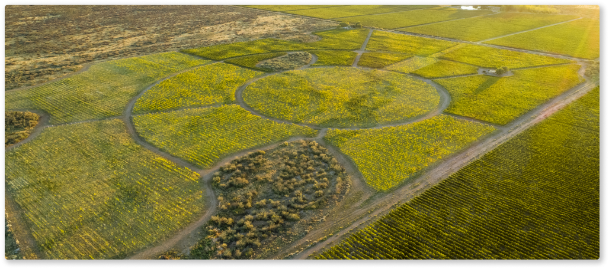
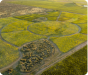
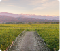
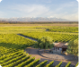
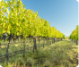
A finales del 1800 el abuelo de Quito Zingaretti llegó con su
familia
desde Italia y se instaló en Maipú. Al poco tiempo compró el terreno donde hoy está ubicada
la
finca. Desde Maipú, viajaban en carreta durante todo un día hasta Tupungato, permanecían
trabajando en la propiedad durante una semana y luego volvían a Maipú. De esta forma fueron
desarrollando la finca hasta que pudieron instalarse allí definitivamente. Fueron, junto a
otras
pocas familias, los primeros viticultores de esa zona.
Américo Zingaretti, llamado así porque fue el primero de la familia en nacer en América, le
dejó
a su hijo “AmeriQuito” Zingaretti la mitad sur de la finca, donde hoy en día se encuentran
4,4
ha de un espaldero de Malbec, anteriores a 1930 (se considera de 1930 porque es el año en el
cuál se comenzó a llevar registro de los viñedos).
Los suelos en general son de textura gruesa, franco-arenosos en donde las rocas aparecen a
distintas profundidades. Dentro de este viñedo encontramos diferencias en el suelo muy
marcadas.
Zonas más fresca que el resto del Valle de Uco, posiblemente por la proximidad a una cadena
de
cerros ubicados hacia el norte que encajonan el aire frío que baja desde la montaña. Esto
nos
llevó a buscar potenciar el chardonnay. La pendiente es algo pronunciada y gracias a la
orientación de las hileras permite un buen flujo de aire que ayuda a mantener la sanidad.
Estas
se orientan de este a oeste a diferencia del resto de los viñedos que suele ser de norte a
sur.
DISTRITO: VILLA BASTÍAS
REGIÓN: TUNUYÁN, VALLE DE UCO ·
MENDOZA, ARGENTINA
ALTITUD
MEDIA: 1.150 METROS
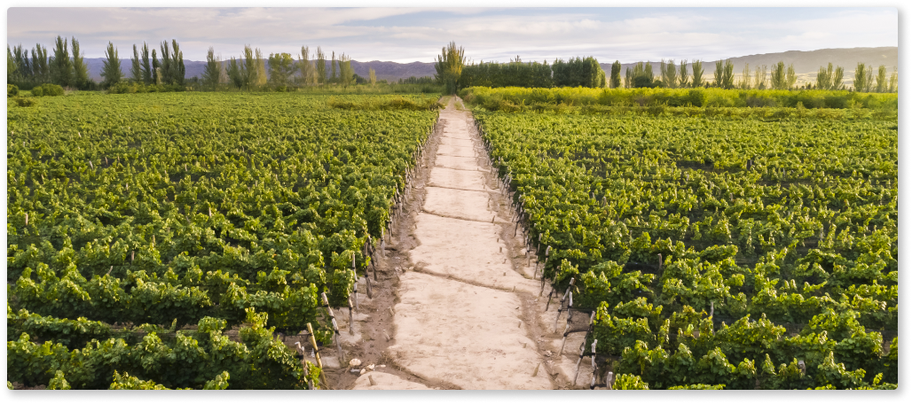
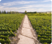
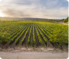
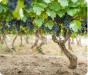
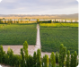
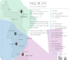
El viñedo Marchiori es una parte importante de la historia de Viña
Cobos. De aquí provinieron las uvas de la cosecha inaugural de la bodega, Cobos Malbec 1999.
Una
de sus dueñas, Andrea Marchiori, fue socia de Viña Cobos durante 18 años.
El suelo es variable según el lugar de la finca. Generalmente encontramos una primera capa
de
suelo más pesado con mayor proporción de arcilla que abarca entre los 10 y 40 primeros cm.
Luego
aparece una textura franco arenosa que permite un buen drenaje del agua. Además, presenta
cantos
rodados de diversos tamaños que en algunos sectores son abundantes. Se trata de viñedos
antiguos, con una población de plantas, la mayoría de más de 80 años.
DISTRITO: PERDIEL
REGIÓN: LUJÁN DE CUYO · MENDOZA,
ARGENTINA
ALTITUD
MEDIA: 995 METROS
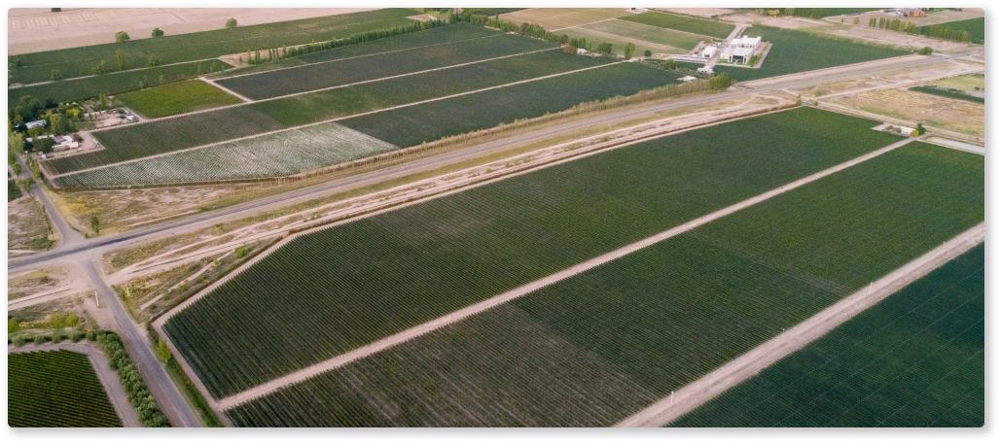
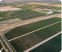
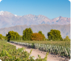
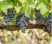
“Cosechamos los frutos de nuestro anhelo y esfuerzo, mientras que continuamos
creando vinos”
Chañares Estate
+
Zingaretti Estate
+
Marchiori Estate
+
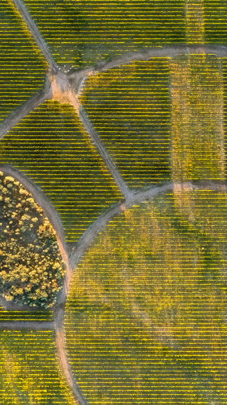
CHAÑARES ESTATE
Esta propiedad tiene una superficie plantada de
17,3
ha
de Malbec, Cabernet Franc y Cabernet Sauvignon.
La zona se caracteriza por tener suelo de origen aluvial, pobre, pedregoso y de buen drenaje. En
cuanto
a la topografía, el viñedo tiene una exposición norte, con una pendiente oeste-este de 2,7%, que
favorece la circulación de aire y las condiciones de sanidad del viñedo.
Durante la época de maduración, la amplitud térmica es de 14,4º C.
Para la irrigación se utiliza goteo. Este sistema, junto con la alta permeabilidad del suelo,
permite
controlar el vigor del viñedo durante el desarrollo vegetativo y la madurez de las uvas. La poda
se
realiza a cordón pitoneado.
Una de las particularidades de este viñedo es que conserva diversos bosques nativos de chañares
-árbol
típico de esta región- como reserva natural de flora y fauna autóctonas.
El viñedo fue adquirido por Paul Hobbs en el año 2013, conservando su diseño y naturaleza.
Chañares
tiene la particularidad de mantener entre sus viñedos diversos bosques nativos de chañares
(árbol
típico
de esta región). Suman 5 bosques de chañares, en total más de 1,5ha, un 10% de la superficie
plantada.
Estos bosques funcionan como refugio de fauna nativa y banco de semillas de flora autóctona. Se
pueden
encontrar diferentes especies de pasturas, arbustos y árboles.
DISTRITO: LOS ARBOLES
Región: Tunuyán, Valle de Uco · Mendoza,
Argentina
Altitud media: 1.184
metros
Nuestro origen
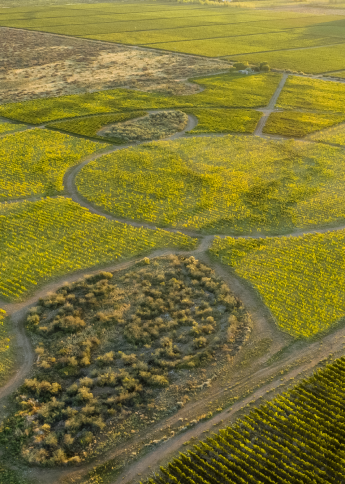
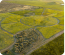
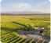
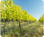
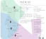
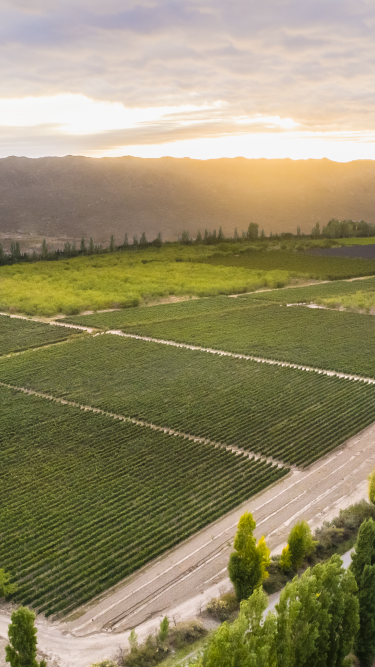
ZINGARETTI ESTATE
A finales del 1800 el abuelo de Quito Zingaretti llegó con su familia
desde Italia y se instaló en Maipú. Al poco tiempo compró el terreno donde hoy está ubicada la
finca. Desde Maipú, viajaban en carreta durante todo un día hasta Tupungato, permanecían
trabajando en la propiedad durante una semana y luego volvían a Maipú. De esta forma fueron
desarrollando la finca hasta que pudieron instalarse allí definitivamente. Fueron, junto a otras
pocas familias, los primeros viticultores de esa zona.
Américo Zingaretti, llamado así porque fue el primero de la familia en nacer en América, le dejó
a su hijo “AmeriQuito” Zingaretti la mitad sur de la finca, donde hoy en día se encuentran 4,4
ha de un espaldero de Malbec, anteriores a 1930 (se considera de 1930 porque es el año en el
cuál se comenzó a llevar registro de los viñedos).
Los suelos en general son de textura gruesa, franco-arenosos en donde las rocas aparecen a
distintas profundidades. Dentro de este viñedo encontramos diferencias en el suelo muy marcadas.
Zonas más fresca que el resto del Valle de Uco, posiblemente por la
proximidad a una cadena de
cerros ubicados hacia el norte que encajonan el aire frío que baja desde la montaña. Esto nos
llevó a buscar potenciar el chardonnay. La pendiente es algo pronunciada y gracias a la
orientación de las hileras permite un buen flujo de aire que ayuda a mantener la sanidad. Estas
se orientan de este a oeste a diferencia del resto de los viñedos que suele ser de norte a sur.
DISTRITO: VILLA BASTÍAS
Región: Tunuyán, Valle de Uco · Mendoza,
Argentina
Altitud media: 1.150
metros
Nuestro origen
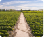
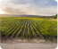
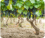
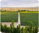
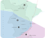
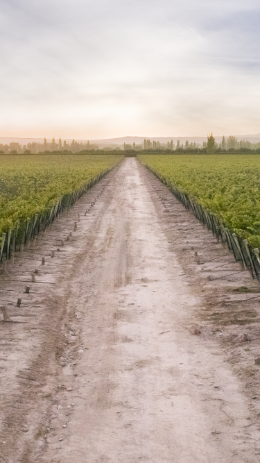
MARCHIORI ESTATE
El viñedo Marchiori es una parte importante de la historia de Viña Cobos.
De aquí provinieron las uvas de la cosecha inaugural de la bodega, Cobos Malbec 1999. Una de sus
dueñas, Andrea Marchiori, fue socia de Viña Cobos durante 18 años.
El suel es variable según el lugar de la finca. Generalmente encontramos
una primera capa de
suelo más pesado con mayor proporción de arcilla que abarca entre los 10 y 40 primeros cm. Luego
aparece una textura franco arenosa que permite un buen drenaje del agua. Además, presenta cantos
rodados de diversos tamaños que en algunos sectores son abundantes. Se trata de viñedos
antiguos, con una población de plantas, la mayoría de más de 80 años.